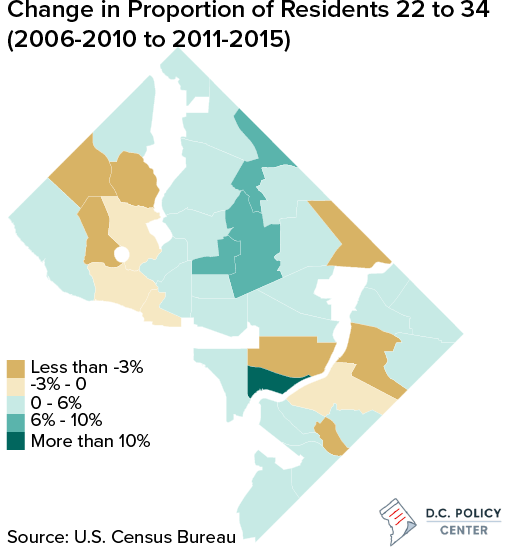
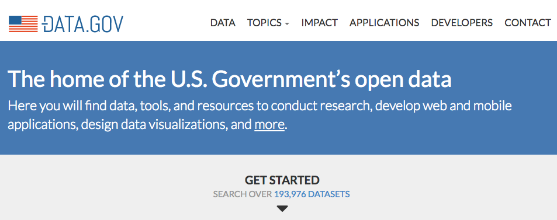
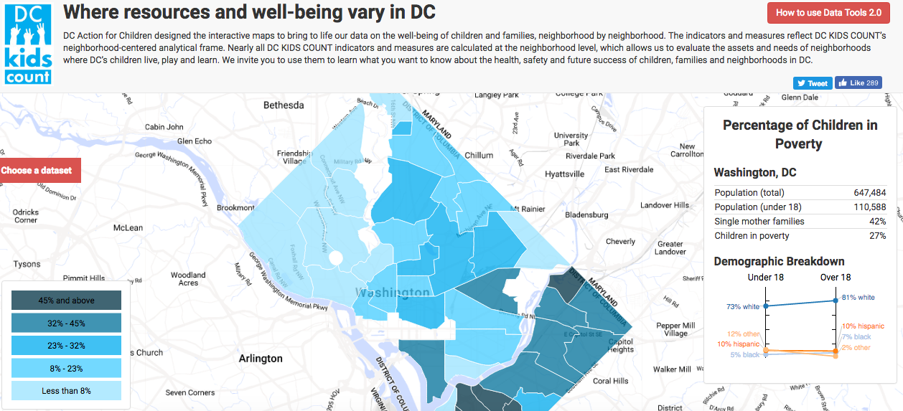

You + Open Data = Better Cities
Kate Rabinowitz
@datalensdc
Open data is data that can be freely used, re-used and redistributed by anyone - subject only, at most, to the requirement to attribute and sharealike.
Source: Open Knowledge Institute
With open data we can both help answer questions and spark conversations about our city
Understanding our Changing Nation
And Our City

Data: American Community Survey Tools: R Github
Data.gov! Nearly Two! Hundred! Thousands! Datasets!
Well, actually...

More than half of the data is from two agencies (NOAA and Fish and Wildlife Services) and the majority is geospatial.
Much of the data is not a format that cannot quickly be visualized.
Inform Policy Decisions
DataKindDC created an interactive data visualization tool used by policy makers to better understand how to support children and families in their city. It's been replicated across the world.
Data: Various Tools: Python, Javascript Github
More and More Data Opening at City-Level
Nearly all midsize and large cities have open data portals, though size and quality is highly variable.
Challenge Conventional Thinking
DataMadeCo flipped the traditional crime map, focused on individual criminal acts, to emphasize the institutional causes and societal cost of incarceration.
Data: Adult Convinction Data via the Chicago Justice Project
Tools: Python, Javascript Github
Open Data Doesn't Mean Perfect Data
A lot of local data (taxi trips, permits, inspections, etc.) does not have a long history of being used for research and policy and lacks the infrastructure (or did so until very recently) for accurate, complete and clean open data reporting.
Hold government accountable
IQuantNY found that the NYPD was systematically ticketing legally parked cars for millions of dollars a year.
Data: New York Parking Tickets Tools: Python, Carto
Not All Anomalies Are Findings
Data is shaped by human decision and should be considered just as imperfect as the humans behind it.
When looking at a dataset you should ask:
- Who collects the data? Why?
- How is the data collected? Will some groups by over or underrepresented as a result?
- Do any summary statistics seem off? Is it a true anomaly or a result of design?
Open Data is a Great Way to Grow and Practice Your Skills in a Meaningful Way
Find Your Community
Code for America Brigades
DataKind Chapters
Check out meetup.com for more groups local to you. Keywords: civic, hacking, open data.